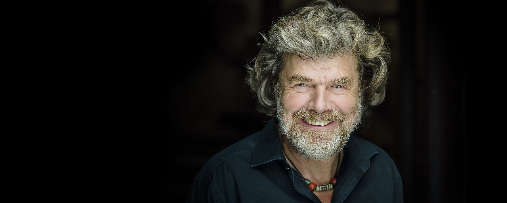

Reinhold Messner
The man who conquered all the deadly peaks.

Reinhold Messner is known for being the first mountaineer to climb all 14 8-thousand above peaks in the world.
Here's a time line of Mr. Messner's mountaineering life:
- 1970- Nanga Parbat (8,125 m or 26,657 feet)
- 1970- Manaslu (8,163 m or 26,781 feet)
- 1970- Gasherbrum I (8,080 m or 26,510 feet)
- 1970- Mount Everest (8,848 m or 29,029 feet), Nanga Parbat (8,125 m or 26,657 feet)
- 1970- K2 (8,611 m or 28,251 feet)
- 1970- Mount Everest (8,848 m or 29,029 feet)
- 1970- Shishapangma (8,027 m or 26,335 feet)
- 1970- Kangchenjunga (8,586 m or 28,169 feet), Gasherbrum II (8,034 m or 26,358 feet), Broad Peak (8,051 m or 26,414 feet)
- 1970- Cho Oyu (8,188 m or 26,864 feet)
- 1970- Gasherbrum I (8,080 m or 26,510 feet), Gasherbrum II (8,034 m or 26,358 feet)
- 1970- Annapurna (8,091 m or 26,545 feet), Dhaulagiri (8,167 m or 26,795 feet)
- 1970- Makalu (8,485 m or 27,838 feet), Lhotse (8,516 m or 27,940 feet)
Messner, Reinhold (October 1981). "I Climbed Everest Alone... At My Limit". National Geographic.